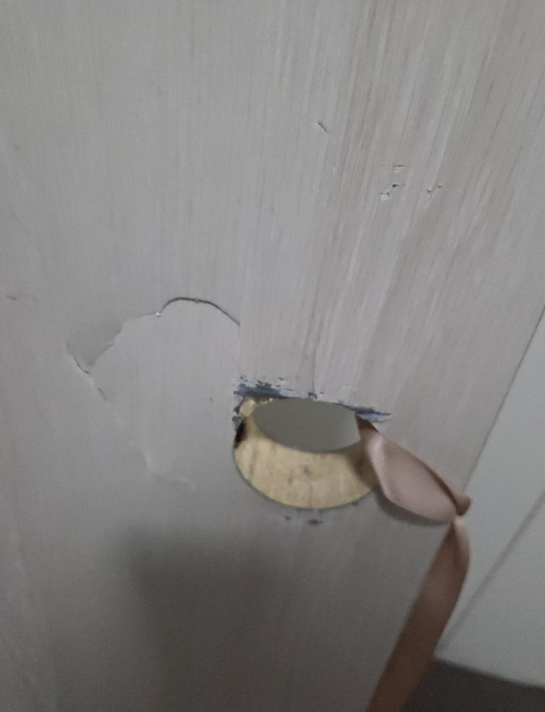
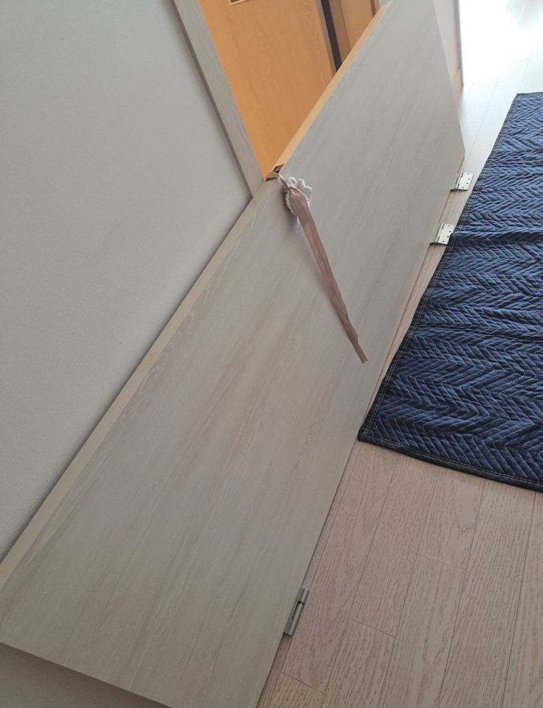
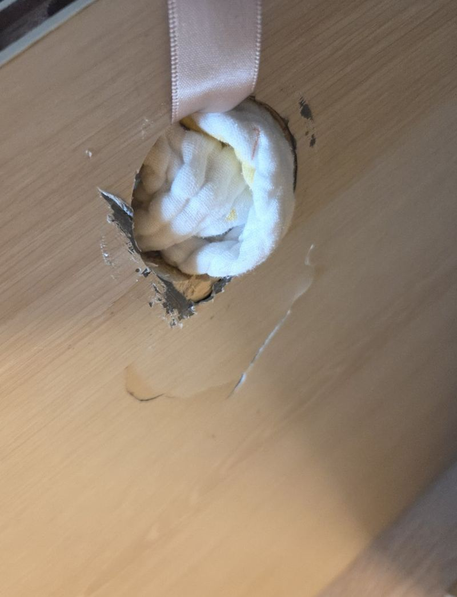
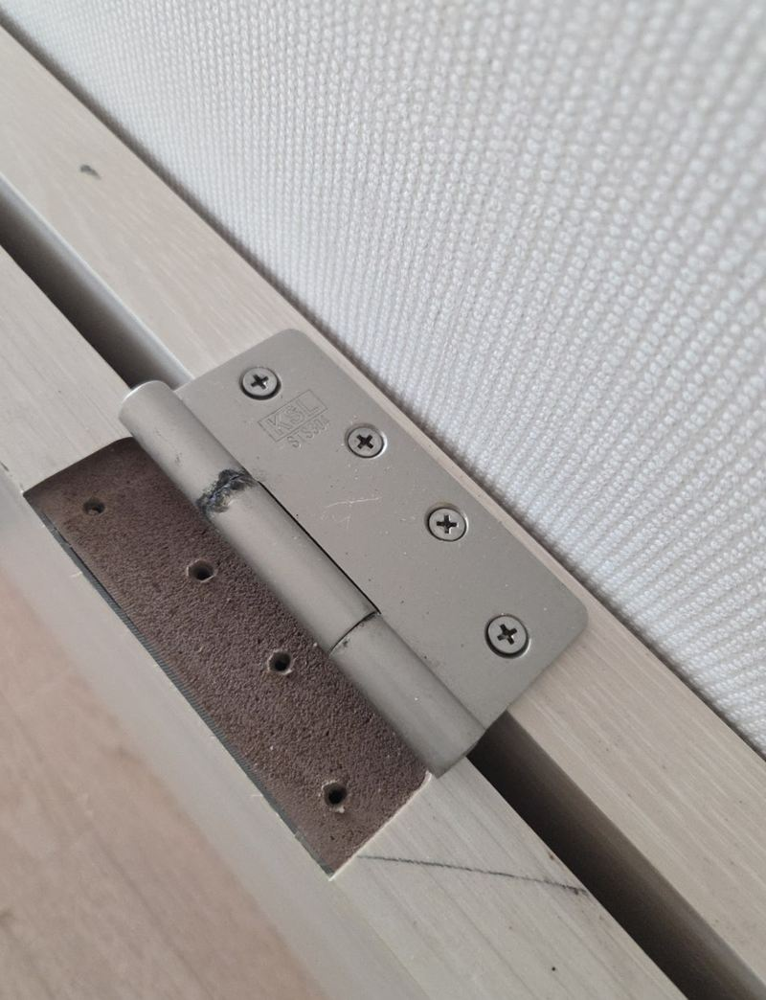
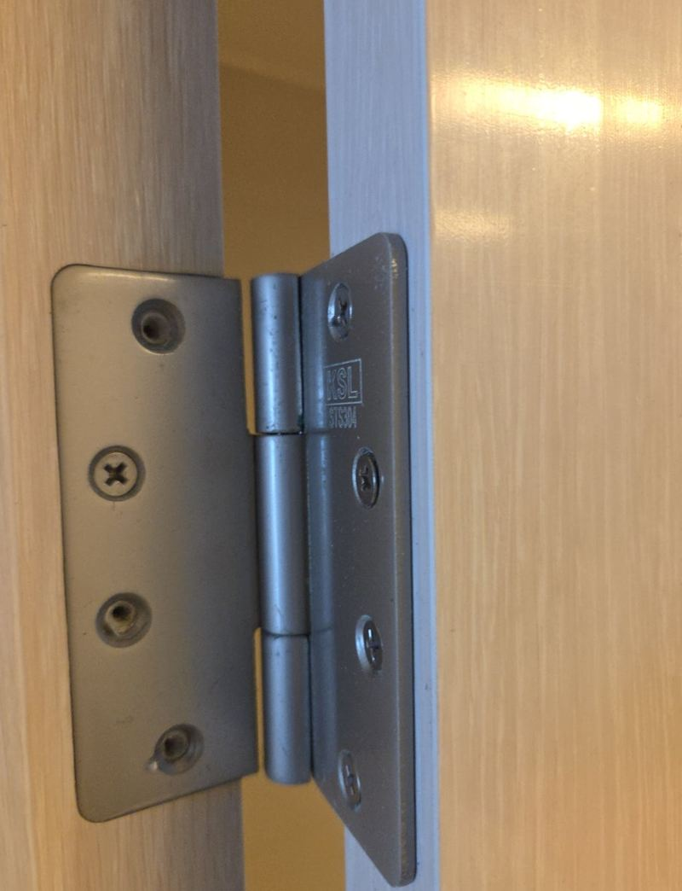
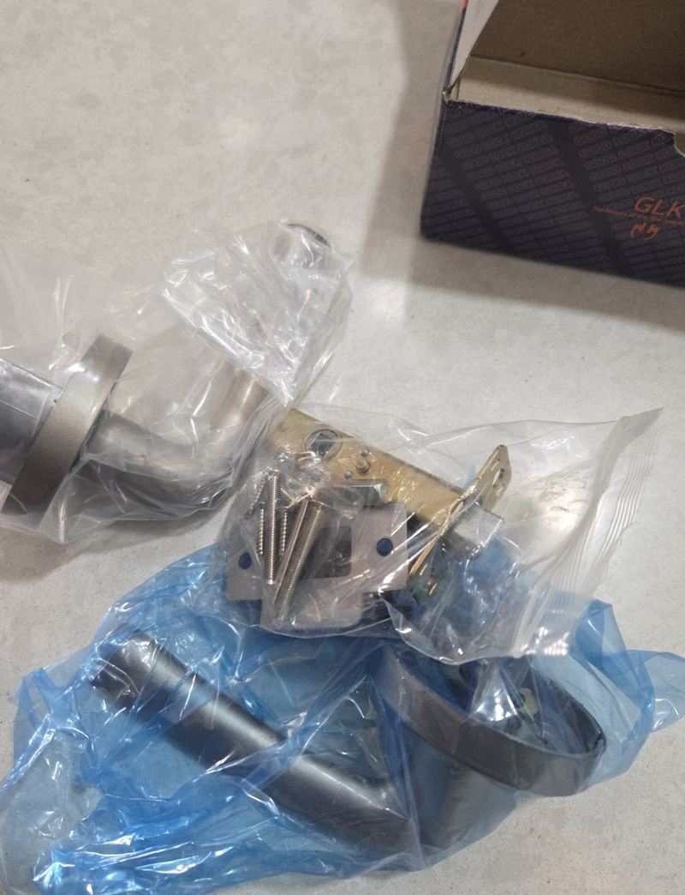
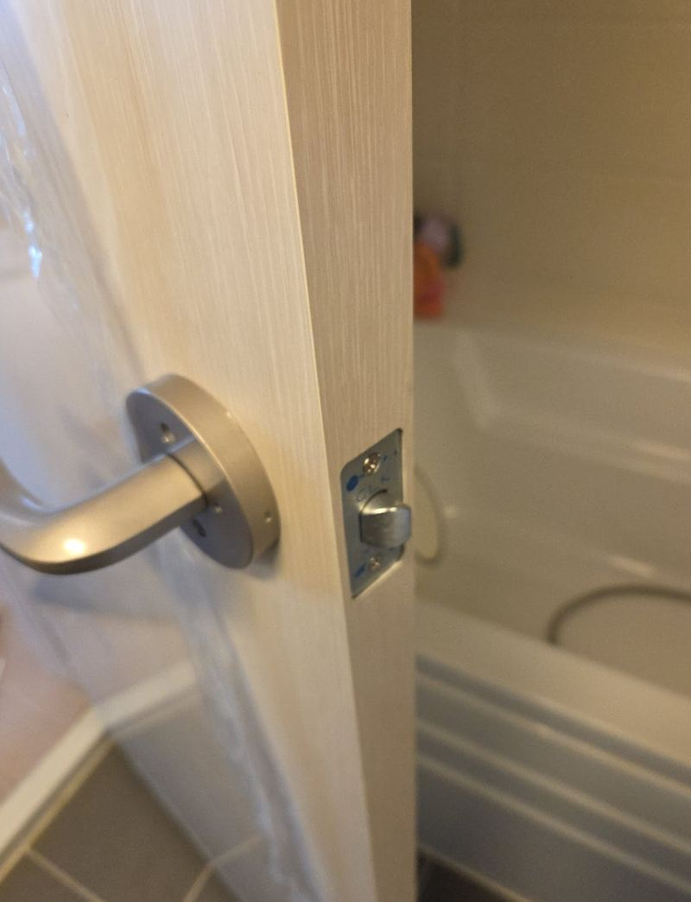

평택 강제로 연 욕실문 파손, 문짝 교체 방법

 교체 전교체 후
교체 전교체 후← 밀어서 전후 비교 →
아이가 욕실 안에서 문을 잠그고 나오지 못해, 급하게 문을 열어야 했던 집이에요. 그 과정에서 문짝 아래와 옆이 찢어져 속 목재가 떨어져 나갔어요. 부분 보수로는 버티기 어려운 상태라, 기존 문과 최대한 비슷한 문짝을 새로 만들어 바꿨어요.
| 현장 | 평택 지제동 아파트 욕실 |
|---|---|
| 사연 | 아이가 안에서 잠가 급하게 강제 개방 |
| 한 일 | 샘플북 색 비교 → 실측 → 문짝 제작 → 기존 문 철거 → 설치 → 손잡이 교체 |
| 추가 | 보험 처리용 견적서·영수증 안내 |
보수로 될까, 교체할까
표면이 찍히고 조금 패인 정도라면 메워서 보수할 수 있어요. 하지만 이 문은 안쪽 목재가 찢어지고 경첩 주변까지 벌어져 있었어요. 이런 상태에서 덧대면 문이 뒤틀리고 다시 갈라지기 쉬워서 교체로 정했어요. 오래 써서 헐거워진 손잡이도 같이 바꾸기로 했어요.


색은 사진 말고 샘플로 맞췄어요
문 색은 휴대폰 사진으로 고르면 실제로 달았을 때 다른 문과 차이가 크게 나요. 그래서 샘플북을 직접 가져가 벽지, 몰딩, 다른 방문 색과 나란히 대 보며 가장 가까운 톤을 골랐어요.
욕실문은 습기 때문에 문틀이 조금씩 틀어진 경우가 많아요. 높이와 폭을 여러 군데 나눠 재서, 닫힐 때 걸리거나 바닥에 끌리지 않을 치수로 문을 만들었어요.
문짝 교체 과정
-
기존 문 철거
경첩을 하나씩 풀어 문짝을 떼고, 문틀 고정 상태와 습기로 약해진 곳이 없는지 확인했어요.


-
새 문짝 달기
새 문짝에 경첩을 다시 달고 문틀에 걸어 수직을 맞췄어요.

-
손잡이 교체와 여닫기 확인
새 손잡이를 달고 잠금이 밖에서도 풀리는지까지 확인했어요. 떼어 낸 문과 부속은 수거해 정리했어요.

보험 처리가 필요하다면
이 고객님은 일상생활배상책임보험 처리를 위해 견적서와 영수증이 필요하셨어요. 보험사마다 요구하는 서류가 달라서, 미리 말씀해 주시면 작업 전후 사진과 함께 필요한 서류를 준비해 드려요.
욕실문, 이런 경우 연락 많이 주세요
- 아이가 안에서 잠갔어요급하게 열다 문이 상했다면 교체로, 잠금장치만 고장이면 손잡이 교체로 해결해요.
- 손잡이가 헛돌고 잠금이 안 풀려요안쪽 래치가 부러진 경우예요. 손잡이만 바꿔도 돼요.
- 문 아래가 불어 터졌어요습기를 오래 먹은 문은 교체를 권해요.
욕실문 교체 질문
문 제작에 시간이 걸리나요?
치수에 맞춰 만들기 때문에 실측 후 다시 방문해 설치해요. 그동안 쓰실 수 있게 임시 조치를 상의해요.
안에서 잠기지 않는 손잡이도 있나요?
밖에서 동전 등으로 쉽게 열 수 있는 비상 해제형 손잡이를 고르시면 아이가 갇혀도 열 수 있어요.
문틀은 그대로 쓰나요?
문틀이 멀쩡하면 문짝만 바꿔요. 문틀까지 상했다면 함께 보수해요.
문 색이 완전히 똑같을 수 있나요?
기존 문은 세월이 지나 색이 조금 바래 있어서 완전히 같지는 않아요. 샘플을 대 보며 가장 가까운 걸 골라요.
문짝 무게가 달라지면 문틀이 버티나요?
같은 종류 문으로 맞추면 문제없어요. 문틀이 약해져 있으면 경첩 자리를 보강해요.
문 하단에 통풍 구멍이 있는 문도 되나요?
욕실 환기를 위해 아래가 트인 문이나 루버가 달린 문도 만들 수 있어요.
교체한 문은 얼마나 쓰나요?
욕실 습기 관리에 따라 달라요. 샤워 후 환기를 해 주시면 문 아래가 덜 상해요.
다른 방문·욕실문 현장
문 전체와 상한 부분, 다른 방문 색이 보이는 사진을 보내 주세요.
전화 상담 010-4517-9872